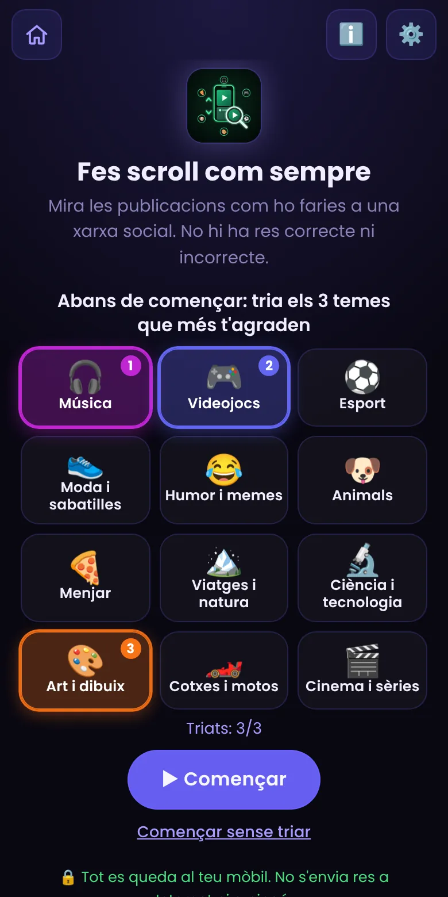
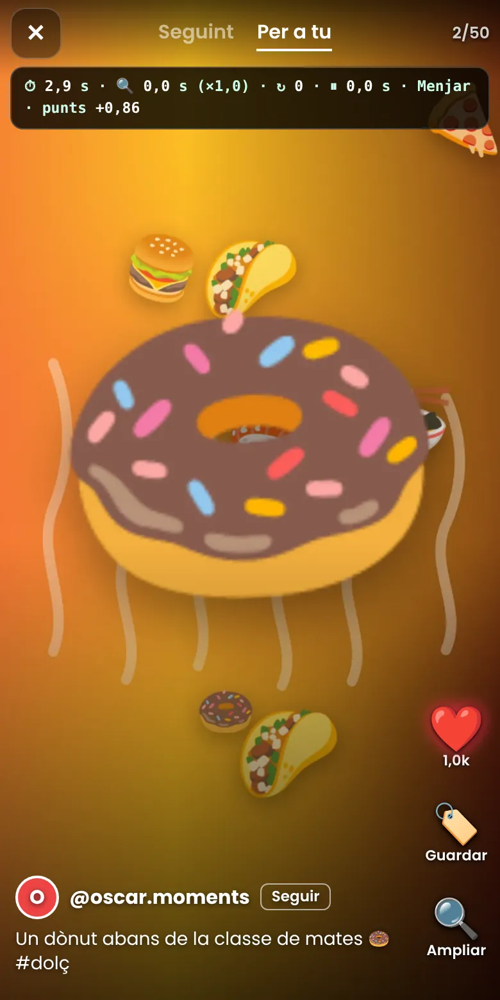
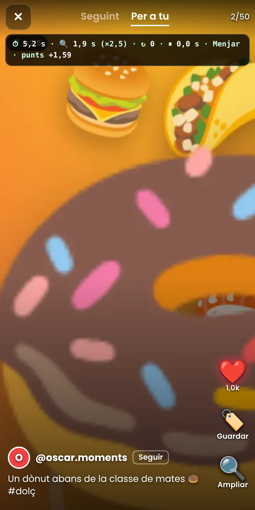
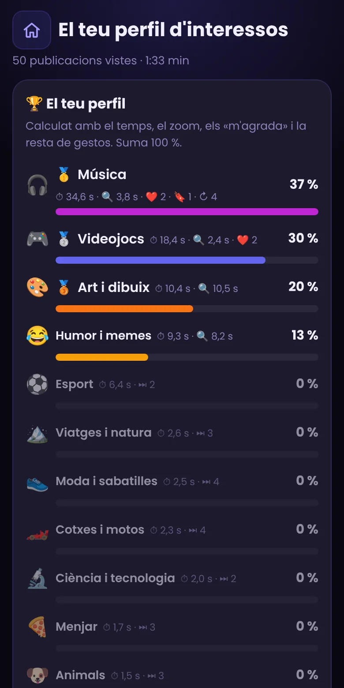
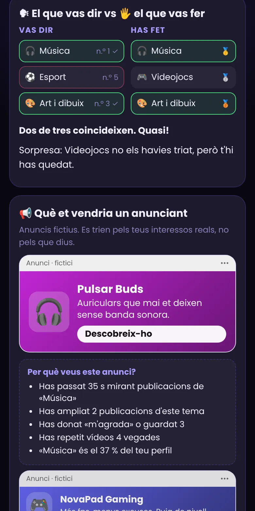
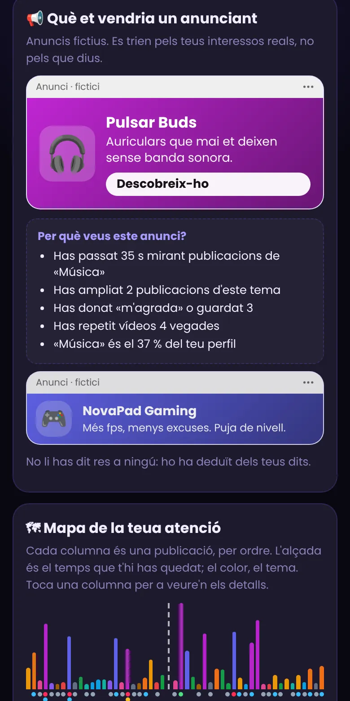
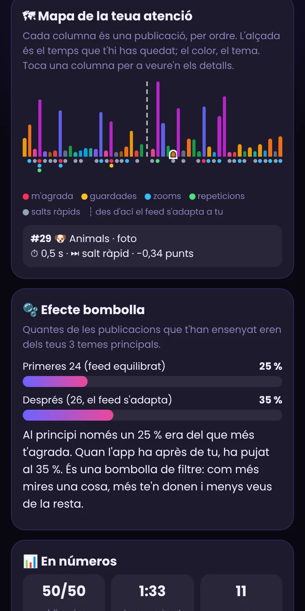

JScroll per al professorat
Una xarxa social de joguina que mostra, amb les dades de cada alumne, com els algoritmes deduïxen els interessos només amb el que fan els dits. Per a 14-18 anys.
Què és i per a què serveix
JScroll és una xarxa social de joguina (estil TikTok/Instagram) amb un scroll de ~50 publicacions entre fotos i vídeos. L'alumnat només ha de fer scroll com sempre. Sense que diguen res, l'app mesura què fan els seus dits i en deduïx un perfil d'interessos: exactament el que fan les xarxes reals.
Està pensada per a alumnat de 14 a 18 anys (ESO, Batxillerat i FP) i treballa tres idees:
- Les dades de comportament parlen. No cal «donar» res: el temps que et quedes, el zoom, repetir un vídeo o passar de llarg ja diuen molt.
- Dir ≠ fer. L'app compara els 3 temes que l'alumne diu que li agraden amb els que els seus dits han preferit.
- L'algoritme et dona més del mateix (efecte bombolla de filtre) i et pot vendre coses (anuncis).
Abans de la classe
- Obri JScroll al mòbil de cada alumne (o a l'ordinador). Es pot instal·lar com a app i funciona sense Internet.
- Comprova a ⚙️ Configuració el nombre de publicacions i el límit de temps (vegeu més avall). Per a una classe de 55 min va bé 50 publicacions i 8-10 minuts.
- Si vols fer una demostració al projector, activa «Mostrar els mesuraments mentre es fa scroll»: veuràs en directe el temps, el zoom i els punts de cada publicació.


Com es fa scroll i què es mesura
Es fa scroll cap amunt com a TikTok (una publicació per pantalla). Gestos:
| Gest | Què fa | Per què importa a l'algoritme |
|---|---|---|
| ⏱ Quedar-se | Temps amb la publicació a la pantalla | El senyal principal de totes les xarxes. |
| 🔍 Ampliar | Pessigar amb 2 dits, el botó 🔍 o Ctrl + roda a l'ordinador | Mirar un detall = molt interés. |
| ↻ Repetir | Deixar que el vídeo torne a començar | Repetir un vídeo indica molt interés. |
| ⏸ Pausar | Un toc sobre el vídeo (dos tocs = «m'agrada») | Parar per a mirar-lo millor. |
| ⏭ Saltar | Passar de llarg en menys de 0,8 s | Senyal negatiu: «això no m'interessa». |
| ❤️ 🔖 | «M'agrada» i guardar | Senyals explícits (pesen més). |

El feed: fase equilibrada i fase adaptativa
Per a poder mesurar bé, el feed té dues fases:
- Fase 1 (≈ 40 %, p. ex. 24 de 50): equilibrada. Tots els 12 temes surten per igual, alternant foto i vídeo. Així el perfil no depén de què se't va ocórrer veure primer.
- Fase 2 (≈ 60 %): adaptativa. El feed dona més pes als temes que més has mirat (amb un 20 % d'exploració aleatòria). És la bombolla de filtre.
Pots desactivar l'adaptació a ⚙️ per a tindre un feed totalment equilibrat (i comparar les dues versions en classe).
La pantalla de resultats
Quan l'alumne acaba (o s'acaba el temps) veu aquest perfil, calculat al moment:




- Si l'alumne ha vist menys de 8 publicacions, l'app no fa perfil (seria poc fiable) i ho diu.
- «📥 Descarregar la targeta» crea una imatge amb el seu top 6, per si vol guardar-la o compartir-la voluntàriament.
- «Com es calcula?» mostra els pesos exactes de cada senyal: és un bon punt de partida per al debat (vegeu més avall).
Proposta de seqüència didàctica (2 sessions de 55 min)
Sessió 1: experimentar
- Predicció (5 min). Pregunta: «Si una app només veiera què fan els vostres dits quan feu scroll, què podria deduir de vosaltres?». Cadascú ho escriu en un paper (sense compartir).
- Scroll (10 min). Cada alumne fa la sessió al seu mòbil, sense comentar res i sense mirar el mòbil del company. Consigna: «feu scroll com ho feu sempre».
- Lectura individual del perfil (5 min). Cadascú mira el seu resultat en privat i compara amb la seua predicció.
- Debat en grups xicotets (20 min) amb les preguntes de baix. Ningú està obligat a ensenyar el seu perfil.
- Posada en comú (15 min) en abstracte: «Què ens ha sorprés?», sense noms.
Sessió 2: entendre i actuar
- Com es calcula (10 min). Projecta «Com es calcula?» i pregunta: «Qui ha decidit que un «m'agrada» valga 0,5 i guardar 0,7? Què canviaria si fora al revés?».
- Repte «enganya l'algoritme» (15 min). Per parelles: repetir la sessió intentant que l'app crega que els agraden temes que no els agraden. Què ha calgut fer? Era fàcil? Què diu això de la fiabilitat dels perfils?
- Versió sense adaptació (10 min). Desactiva l'efecte bombolla (⚙️) i repetix. Compara els resultats i el mapa d'atenció.
- Tancament (20 min). Decàleg de classe: «Què faig des d'ara amb el meu scroll?» (limitar temps, usar el «no m'interessa», revisar permisos i anuncis, etc.).
Preguntes per al debat
- Coincideix el que vas dir amb el que han vist els teus dits? Per què creus que passa?
- Sabies que estaves deixant tantes pistes? Quines te sorprenen més (zoom, repeticions, saltar)?
- Quins anuncis et sortirien amb este perfil? Qui els pagaria? Què en guanyen?
- Si l'app veu que et quedes més temps en un tema, és perquè t'agrada o perquè et captura? Quina és la diferència?
- Què passa si totes les publicacions que veus són del que ja t'agrada? Què et perds?
- Qui decideix els pesos de cada senyal? Qui hauria de poder decidir-ho?
- Com de bé et coneix este perfil de 50 publicacions? Com de bé et coneixeria un d'un any?
- Quina informació NO ha pogut deduir (i per què és important saber-ho)?
- Què canviaries en la teua manera de fer scroll?
Ètica, privacitat i cura
- El perfil és de cada alumne. Mai obligues a ensenyar-lo ni el projectes sense permís. Hi ha qui es pot sentir exposat.
- Els 12 temes són neutres a propòsit (música, esport, animals…). No hi ha temes sensibles (salut, sexualitat, política, religió…): fer-los seria una eina d'exposició, no d'aprenentatge.
- No és un diagnòstic. És una estimació simple basada en 50 gestos. Cal dir-ho: no defineix qui és ningú.
- Tot és local. Si l'alumne vol esborrar-ho: «🗑 Esborrar les meues dades» (al final del perfil i a ⚙️ Configuració).
- El contingut d'exemple és generat (no hi ha persones reals). Si hi poses les teues publicacions, evita imatges d'alumnat o de persones identificables.
Configuració del professorat (⚙️)
| Opció | Efecte |
|---|---|
| Publicacions (20–60) | Longitud de la sessió (50 per defecte). Fase 1 = ≈ 40 %. |
| Límit de temps (0–20 min) | La sessió acaba amb el que passe primer: totes vistes o límit. 0 = sense límit. El temps només compta mentre es mira una publicació. |
| El feed s'adapta | Activa/desactiva la fase 2 (efecte bombolla). |
| Mostrar mesuraments | Mostra dalt el temps, zoom, repeticions, pausa i punts en directe (per a demostracions). |
| Esborrar dades | Elimina l'últim perfil guardat en este dispositiu. |
La configuració es guarda en el dispositiu on la canvies (cal fer-ho en cada mòbil).
Posa les teues pròpies fotos i vídeos
El catàleg d'exemple té 72 publicacions (6 per tema: 4 fotos + 2 vídeos), generades per a este projecte. Pots substituir-les per les teues amb l'eina tools/jscroll-media.py. Cal tindre Python 3, Pillow i ffmpeg (ffprobe inclòs) al teu ordinador.
- Crea una carpeta amb una subcarpeta per tema, amb estos noms:
music gaming sport fashion humor animals food travel science art cars cinema. Posa-hi les fotos (jpg, png, webp, heic) i els vídeos (mp4, mov, webm…). - Executa, des de la carpeta del projecte:
python3 tools/jscroll-media.py LA-MEUA-CARPETA. Redimensiona les fotos, comprimeix els vídeos (≤ 12 s, sense so) i regenera el catàleg. Afig--cleanper a esborrar abans les publicacions d'exemple d'aquells temes. - Després:
python3 tools/build-pwa.pyi puja-ho tot a GitHub (o executaactualitzar-pwa.bat).
jscroll/media/captions.json.Limitacions i problemes habituals
- Només 50 publicacions i 12 temes. És una demostració didàctica, no un estudi: no s'han de treure conclusions sobre una persona.
- Zoom que no respon: pessiga amb dos dits sobre la imatge (no sobre els botons) o toca 🔍 Ampliar. A l'ordinador, Ctrl + roda. Si l'has ampliat amb 🔍, torna a tocar-lo per a poder seguir fent scroll.
- Un vídeo no es reprodueix: comprova que és H.264/MP4 (l'eina ho fa soles). L'app no té so.
- Al mòbil el scroll va a salts: és normal, cada gest passa a la següent publicació (com TikTok).
- Si la pestanya passa a segon pla, el compte de temps s'atura.
- No es guarda el progrés d'una sessió interrompida: només l'últim perfil acabat.